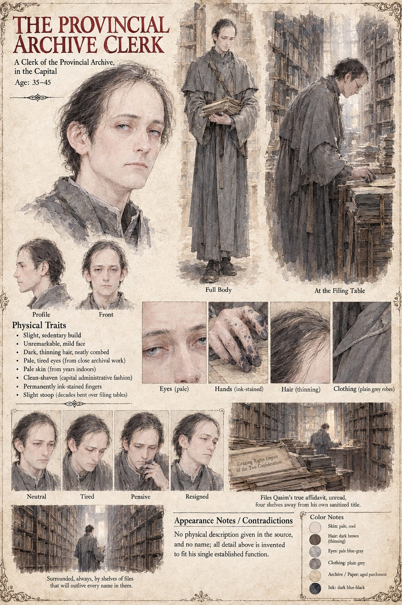

The Provincial Archive Clerk
A clerk of the Provincial Archive in the capital · unnamed · names the war the Grazing Rights Dispute of the Two Confederations · thirty-five to forty-five by the sheet
A clerk of the provincial archive in the capital, who has never once set foot in either clan's territory, and who closes the file two years after the garrison captain's truce under an administrative title meant to outlive every person who fought in it: the Grazing Rights Dispute of the Two Confederations. According to his own surviving correspondence, he chose it because it was accurate, dignified, and required no further explanation to a reader in the capital who would never ask for one.
The manuscript calls it a masterpiece of the form. It is technically true, since once the truce ended the worst of the killing the dispute did cool into two more years of genuine if lower-grade quarrels over the grazing rights the fighting had disrupted. It is entirely false, since not one drop of the blood that started it had anything to do with grass, water or land. And it is permanently unfalsifiable, since the one document that could have corrected it, a dead thief's confession carried by a courier paid to forget his own errand, was filed, unread by anyone who might have cared, in the very same archive, four shelves away. The closing log sets the clerk's tidy verdict beside its own, and its Analyst Note admits that the Primary Finding was reached by very similar reasoning, declining, out of what it can only describe as professional courtesy toward a clerk it has never met, to say so more directly.
The sheet states plainly that the manuscript gives him no physical description and no name, and that every detail is invented to fit his single established function: a slight, sedentary build, a mild, unremarkable face, dark thinning hair neatly combed, pale tired eyes from close archival work, pale skin from years indoors, clean-shaven in the capital's administrative fashion, permanently ink-stained fingers and the slight stoop of decades at filing tables, in plain grey robes among shelves of files that will outlive every name in them. A panel shows him filing Qasim's true affidavit, unread, four shelves away from his own sanitized title; the age band, the face and the clothing are the sheet's.